| Starfighter: Disputed Galaxy, Alien Ships | ||||||||||||||||||||||||||||||||||||||||||||||||||||||||||||||||||||||||||||||||||||||||||||||||||||||||||||||||||||||||||||||||||||||||||||||||||||||||||||||||||||||||||||||||||||||||||||||||||||||||||||||||||||||||||||||||||||||||||||||||||||||||||||||||||||||||||||||||||||||||||||||||
|
Alien Ships
01. Fighter (0 kills needed) How to read the Ship Tables Each ship is rated in its ability as a dogfighter, long range sniper, utility craft, specialty craft, and for its size. Each rating is from A+ (best) to F (worst) except for size, which is a numerical rating.
Dogfighter: This is a rating of the ship's ability in a close range dogfight, fighting at ranges of 2000 or less. Fighter
Cons: Weak Shields, limited options, speed is only average. A suggested load-out: Weapons: Laser Beam, Type 3 Carnivore Torpedo. Utilities: Engine Overdrive. Engine: Enhanced Interstellar Fighter Engine (with Hyperspace Recharger). How to use it: In the Alien Tutorial, I recommend using a Sprinter to rack up your first 25 or so kills and your first 50,000 credits, by grinding Courier missions. However, the Fighter is also a very decent choice for following this strategy. The Fighter loses the pure raw speed of the Sprinter and so will be at a slight disadvantage in ambushes. However, the Fighter is a more maneuverable ship in close combat, which will make it very difficult for enemy AIs to hit you with unguided weapons. It also has much stronger Shields than the Sprinter and a tighter turning circle. This makes it a superior dogfighter in inexperienced hands and will forgive overconfidence that would get you killed in a Sprinter. For instance, the Fighter can take on and defeat an Eos or a Centaur without too much trouble, while such fights would be much tougher for a Sprinter. The Fighter Hyperspace Recharger engines are also the same price as the Sprinter ones. The main disadvantage that the Fighter has versus the Sprinter for newbie training is that the Fighter is less forgiving to newbie mistakes. If the Sprinter pilot finds himself in a situation that is more than he can handle, the Sprinter can pick any escape direction it likes, fire engines, and run. The Fighter pilot had better have an exit strategy ready to go, because its inferior speed without boosters or Engine Overdrive will make such an escape suicidal. If you fly the Fighter, be aware of the "X" key at all times! This will fire your boosters and might get you out of a jam. You can also use your smaller size to your advantage. Get just slightly off-axis to your target while you attack them. Your target will struggle to bring his weapons to bear on you; meanwhile you can get in several free shots. 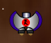 Besides being the new player's ship, Fighters are sometimes used by very experienced Starfighter players to make a point in one-on-one Multiplayer battles. Real life fighter pilots have an axiom: "The superior pilot will win, even in an inferior plane." This was proven in the Korean War when U.S. pilots in F-86 Sabres were successful in attacking MiG-15s despite the measurable superiority of the Russian aircraft. In this sort of battle, Starfighter veterans will most often equip their Fighter with a Laser Beam, Hornet Torpedoes, and an Engine Overdrive. The EOD is used to make high speed passes over the superior ships while using the Hornets to disrupt and break up potential locks against them. As the Fighter passes through, it will then land a Laser Beam attack or two, swinging around to make up to four such passes. This sort of attack is often sufficient to destroy a single enemy fighter, no matter the type, and few but other veterans can effectively counter the tactic if they are limited to another fighter. This tactic is also often used in the Sprinter, below, but is less effective due to the Sprinter's thin Shields. Ship Cost: 500. Engine Costs: Enhanced Booster: 500; Overclocked: 2000; Enhanced Propulsion: 2250; Pulse Core: 4500; Interstellar: 10,000; Enhanced Interstellar: 11,000. Best against: Drones, Heavy Drones, Pegasi, Eoses, Satyrs.Weak against: Anything maneuverable with heavy Shields, particularly Nymphs, Centaurs, and Argonauts. Back to top Freighter
Cons: Takes an age to make a turn, broadside is an enormous target, limited offensive options. A suggested load-out: Utilities: Engine Overdrive, Tractor Beam. Mine: Thunder Bolt Mines. Proximity: Damage Bubble. Mining Laser: Type LR 3 Mining Laser. Engine: Enhanced Interstellar Freighter Engine (with Hyperspace Recharger). 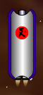 How to use it: Don't. Well, not if you have any choices, really. The only serious use the Freighter can be put to is in very early game mining or Courier missions when you are incredibly desperate for money. The Freighter has good speed (in a straight line) and very tough Shields and as a result, is a tough target for enemies to destroy. The bad news is that the Freighter has virtually no offensive power of its own. It has no Weapon slots and its space bar Laser Cannon is all but useless due to the Freighter's frightfully slow turn rate. If attacked, the Freighter's only hope is the clever use of the slots it does have. One possibility is to use a Tractor Beam in one of the Freighter's Utility slots to drag attacking ships into a Damage Bubble or Thunder Bolt Proximity weapon surrounding the ship. Another option is to use Thunder Bolt Mines, then use the Engine Overdrive to flee the area (and the battle) before the mines activate. If you must use this ship, though, it's best to limit yourself to Courier missions using hyperspace, stopping at the asteroids you pass to supplement your income. Run up your money as quickly as possible so that you can trade this ship in for something else. Ship Cost: 6000. Engine Costs: Enhanced Booster: 6000; Overclocked: 24,000; Enhanced Propulsion: 27,000; Pulse Core: 54,000; Interstellar: 127,000; Enhanced Interstellar: 132,000. Best against: Nothing.Weak against: Everything. Back to top Sprinter
Cons: Very thin Shields, many weapons can kill it in one shot, no better offensive options than the Fighter. A suggested load-out: Weapons: Laser Beam, Type 3 Carnivore Torpedo. Utilities: Engine Overdrive. Engine: Enhanced Interstellar Sprinter Engine (with Hyperspace Recharger). How to use it: If you play the game properly, then the Sprinter should be your first ship. Load it per the suggestions above, following the advice of the Alien Tutorial on this site and you'll do very well. The Sprinter will earn you your first 50,000 money and your first 20 or 30 kills, giving you a firm foundation for the start of your alien career. Used in this manner, the Sprinter will primarily encounter ambushes of Drones and occasionally, Heavy Drones. Deal with these at the maximum possible range of your Type 3 Carnivores. It will take one to two Carnivores to destroy a Drone, and four Carnivores to destroy a Heavy Drone. The Laser Beam is the perfect starter weapon for the Sprinter, and allows you to learn dogfighting techniques in the early game, and will still be a perfectly serviceable weapon into the mid-game if you choose to keep the Sprinter a little longer. The Interstellar Sprinter Engine will allow you to rapidly complete Courier missions and build up your income. In fact, Sprinter plus Hyperspace Recharger plus Courier missions is one of the fastest ways to make money in Starfighter, and it's available to you almost from the very beginning of the game.
Ship Cost: 500. Engine Costs: Enhanced Booster: 500; Overclocked: 2000; Enhanced Propulsion: 2250; Pulse Core: 4500; Interstellar: 10,000; Enhanced Interstellar: 11,000. Best against: Drones, Heavy Drones, Starfighters, Astros, Chariots.Weak against: Everything else. Back to top Weaver
Cons: Poor speed, relatively weak Shields for a dogfighter, limited weapons. A suggested load-out: Weapons: Plasma Cannon, Thunder Bolt Torpedo. Utilities: Energy Cell, Tractor Beam. Engine: Weaver Pulse Core Engine (1.6x top speed, 1.2x boost). How to use it: The Weaver is all about dogfighting. It is the most maneuverable ship in the game, with a great size for dogfighting (small), and able to move very precisely and well in tight situations. A properly piloted Weaver should never hit a mine, for instance, and it can avoid many of the other pitfalls of less maneuverable ships. The downside, particularly for dogfighting, are the Weaver's thin Shields (100). A Thunder Bolt Torpedo will make short work of an Weaver, and a pair of Thunder Mines are a nearly immediately deadly threat. Still, as an early game dogfighter, and particularly for learning dogfighting techniques, the Weaver is unsurpassed. The build that I recommend for this ship has this idea in mind, and shouldn't be used much past 250 kills or so, but until then will be a great way to learn close-in fighting. After 250 kills or so, you will start to encounter multiple ships armed with Thunder Bolt weapons, and the Weaver should be traded in for something else. Until then, equip the Weaver with a Plasma Cannon and a Thunder Bolt Torpedo of your own. Both of these weapons are short range, and the Plasma Cannon is unguided. However, your Weaver is extremely maneuverable and you should have little difficulty aiming this weapon. Be careful of the splash! Within 100 range, the Plasma Cannon does splash damage, but the Weaver's limited speed will actually be to your benefit here. It should keep you from rushing targets and getting yourself killed. Four blasts from the Plasma Cannon will destroy a human Triton Cargo Ship, and three or less will destroy almost any other human ship. Larger targets can be softened up with the Thunder Bolt Torpedo you carry. I recommend equipping a Tractor Beam -- use it! In fact, your best move against targets with 200 or more Shields should be to immediately immobilize them with the Tractor Beam. That will limit the damage you take and make practicing with your Plasma Cannon much easier since your target will be relatively motionless. Be careful that the ship you Tractor isn't so close that you bring it within 100 distance; if the target does get that close, switch to your space bar Laser Cannon. The Energy Cell is recommended both to feed the energy-hungry Plasma Cannon and to help rebuild your Shields. With less than 100% energy, activate the Energy Cell and then hold down your "C" key! This will transfer the Energy Cell's output directly into your Shields as long as you have the "C" key held down. 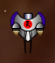 The downside of this build is that you're going to be useless against ambushes and against other large groups of ships. This build is intended to practice dogfighting, not long range sniping. If you encounter an ambush, fire your boosters ("X" key) and leave the ambush behind. The others should be left behind. If you want to attack ambushes, you're going to want another ship... Ship Cost: 750. Engine Costs: Enhanced Booster: 750; Overclocked: 3000; Enhanced Propulsion: 3375; Pulse Core: 6750; Interstellar: 15,000; Enhanced Interstellar: 16,500. Best against: Drones, Heavy Drones, Tritons, Chariots, Minotaurs.Weak against: Nymphs, Hydras, Warships, Medusae. Back to top Marauder
Cons: None, really. A suggested load-out: Weapons: Laser Beam, Thunder Bolt Torpedo. Utilities: Engine Overdrive. Mines: Gravity Mine, Thunder Bolt Mine. Engine: Enhanced Interstellar Marauder Engine (with Hyperspace Recharger). How to use it: The Marauder is the perfect ship to learn hit-and-fade strike tactics, and to learn dogfighting maneuvering, and the suggested build-up (suggested by mrmocky, a long-time Marauder pilot) is an excellent way to practice those tactics. The Marauder itself is built toward those tactics, with an excellent mix of speed, acceleration, and maneuverability. Its speed, 12, is among the fastest fighters in the game; it also has a relatively small size going for it, a rarity in an alien ship where large ships are the norm. You're going to want to use it in the early game (under 800 or so kills), when you're mostly going to be facing other fighters, and heavier human ships will be few and far between. In this kind of environment, the Marauder will shine. You'll primarily be using your space bar Laser Cannon and the Laser Beam to defeat smaller ships with 125 Shields or less (Drones, Heavy Drones, Pegasi, Astros, Argonauts). Get in behind them and practice your dogfighting skills. Drones, in particular, should be destroyed with the space bar Laser Cannon until you're a particularly good shot. At that point, your Laser Beam can be traded in for a Plasma Cannon, which does the even better damage for a much lower energy cost. Larger fast targets should be attacked with your Thunder Bolt Torpedo. Larger slow targets should be attacked with your Gravity and Thunder Bolt Mines, dropping them into the path of larger targets, then using your superior speed to get away. Once the mines have done their damage, you can turn back in to finish off these larger targets. The Engine Overdrive can be used for escape or evasion, or to practice the high-speed sniping tactics that will serve you very well in mutiplayer sectors. 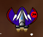 Using a Marauder in this way, you'll need to get lots of kills quickly and pick up the bonuses; otherwise, the Marauder doesn't have much endurance. If you run out of energy or ammunition, use your Engine Overdrive to escape the sector and start over in a new sector. Marauders will generally have a tough time defeating fast, well-armed enemy ships with 200 Shields or more, particularly Nymphs, Centaurs, Warships, and Hydras, due to this lack of endurance. Ship Cost: 1750. Engine Costs: Enhanced Booster: 1750; Overclocked: 7000; Enhanced Propulsion: 7875; Pulse Core: 15,750; Interstellar: 35,000; Enhanced Interstellar: 38,500. Best against: Starfighters, Astros, Satyrs, Hawks, Minotaurs.Weak against: Nymphs, Centaurs, Warships, Hydras. Back to top Protector
Cons: Limited Weapons, limited speed, and horrible acceleration. A suggested load-out: Weapons: Laser Beam, Thunder Bolt Torpedo. Utilities: Energy Cell, Rapid Shield Recharger. Mines: Thunder Bolt Mines. Engine: Enhanced Interstellar Protector Engine (with Hyperspace Recharger). How to use it: Don't. It's nearly impossible to recommend the Protector, when there are so many other good ships out there for beginners. The only advantage that the Protector brings to the table are its very tough Shields (200), which will make the Protector difficult to die in in the early game when you are mostly facing much more lightly-shielded foes. But the Protector is going to be nearly equally impossible to make kills in. In exchange for its tough Shields, it has several horrid disadvantages, notably its only average turn rate and its awful acceleration. You will have to grow very familiar with the "X" key when using the Protector. This key (at the cost of 35% energy) will fire your boosters and get you up to combat speed quickly. However, if you overshoot your targets or if they out-maneuver you, which will surely happen, the Protector has no good counters. It takes an age to bring the ship about, and you can forget about close-in precise maneuvering. The main area where you're going to have the advantage in the Protector is in toe-to-toe combats versus dumb AI opponents. If you can bring the Protector's nose to bear on the target, the Laser Beam that I recommend will allow you to land several punishing blows against small opponents such as Starfighters and Astros. They will pound away at you with their weapons -- even heavy weapons -- and your tough Shields will be able to take this punishment with no real problems. Tougher opponents should be attacked with your Thunder Bolt Torpedo. This will soften them up for you to kill with your Laser Beam. With this weapon mix, you'll have limited options against ambushes, but in the Protector, the only types of ambushes that you should be thinking about are those made up of light ships, primarily Drones and Heavy Drones. Against these opponents, feel free to wade in, activating your Rapid Shield Recharger, and fire repeated blasts from your Laser Beam. Activate your Energy Cell as the Laser Beam rapidly consumes your power. The Protector can safely dive into these early ambushes with little risk to itself, trusting its Shields and the RSR to keep it safe. When you get into trouble, drop your Thunder Bolt Mines and immediately activate your boosters to escape them, then hyperspace away. 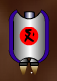 Still, the Protector is going to be terribly frustrating to fly, particularly in view of its acceleration. Any time that you need to stop or maneuver precisely (such as to pick up drops or to do some mining), the Protector is going to let you down. Upgrade to another ship as soon as it is practical to do so. Better still, don't buy this ship in the first place. Ship Cost: 2000. Engine Costs: Enhanced Booster: 2000; Overclocked: 8000; Enhanced Propulsion: 9000; Pulse Core: 18,000; Interstellar: 40,000; Enhanced Interstellar: 44,000. Best against: Starfighters, Astros, Chariots, Eoses, Satyrs.Weak against: Nymphs, Centaurs, Warships, Hydras. Back to top Conqueror
Cons: Relatively weak Shields and only average fighter maneuverability. A suggested load-out: Weapons: Laser Beam. Utilities: LASS Stealth System. Mines: Thunder Bolt Mines. Proximity Weapons: Thunder Bolt, Proximity Blaster, Damage Bubble. Engine: Enhanced Interstellar Conqueror Engine (with Hyperspace Recharger). How to use it: The Conqueror is an easy ship to use, but a hard ship to use well. It wants to be a dogfighter, but it is large for a dogfighter, and has relatively thin Shields. Still, it's a ferocious opponent up close, and to use it correctly, you really have to use the Conqueror aggressively. The load-out that I have recommended is geared toward that end. The Conqueror has no good long-range options, and is not a ship geared to long range combat in any event. As a result, the LASS Stealth System will be your initial defense from long range attack. Activate it, then move into combat. As soon as you come under visual attack, activate your Damage Bubble. This will do continuous damage to enemies in your immediate vicinity and will act as a force multiplier for your other weapons. Primary among these other weapons will be your Laser Beam. This weapon is intended to soften up targets so that your Damage Bubble can kill them. Since this is your only primary weapon, the skill in using the Conqueror is in piloting it. The closer you can get to your enemies, the more effective your proximity weapons will be. Since you will have limited shots with these weapons, you need to pilot in such a way as to bring as many enemies as you can within range of your weapons before you fire them. This will require skill, but will require nerve even more. The Conqueror Shields are not truly up to the task that you'll be asking of them, and you'll have to hope for frequent and lucky bonus drops, particularly health and ammo drops. As you approach weak ships, fire off Proximity Blaster shots. This will one-shot kill Drones, Heavy Drones, and Pegasi, and seriously damage Starfighters and Astros probably sufficient for your Damage Bubble to kill them. Larger targets can be met with your Thunder Bolt proximity weapon. This will do a great deal of damage to nearby targets, particularly when combined with the effect of your Damage Bubble. This combination will be particularly effective against ambushes -- dive into them! Atlases and other particularly large targets should have your Thunder Bolt Mines dropped on them. After dropping them, move off rapidly and on boosters ("X" key). Again, the trick to using this ship well will be in your piloting skill and your nerve, combined with a little luck in the bonus drops you collect. You will run out of proximity weapon shots frequently, and will have to do a good job of keeping track of what you have ammunition for and what is being reloaded as you pick up bonuses. One final trick to remember with this ship: every time you get a Damage Bubble, activate it! The effects of Damage Bubbles stack, so it could be that your Damage Bubbles alone will devastate anything close. 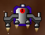 In any case, the Conqueror is not going to be a ship that you use for long. Once you start seeing Thunder Bolt Torpedoes launched at you, it's time to switch to something else. The Conqueror has no good counter to Thunder Bolt weapons; its Shields are simply too thin. Ship Cost: 2000. Engine Costs: Enhanced Booster: 2000; Overclocked: 8000; Enhanced Propulsion: 9000; Pulse Core: 18,000; Interstellar: 40,000; Enhanced Interstellar: 44,000. Best against: Drones, Astros, Nymphs, Centaurs, Atlases.Weak against: Argonauts, Chariots, Satyrs, Warships, Medusae, Hydras. Back to top Guardian
Cons: Easy to kill head-to-head and only average fighter maneuverability. A suggested load-out: Weapons: Plasma Cannon. Utilities: Reverse Power Thrust. Mines: HE Proximity Mines or XHE Time Mines, Stealth Mine, Gravity Mine, Thunder Bolt Mine. Engine: Enhanced Interstellar Guardian Engine (with Hyperspace Recharger). How to use it: The Guardian is far and away the most specialized ship in the game, and is far and away the most difficult ship to use effectively. It is nearly useless as a long range sniper, and not much better in dogfights. With only one regular Weapon and only one Utility slot, anyone who tries to use the Guardian in traditional ways is foolish and will be quickly and easily killed. Most people who try to use the Guardian do so by trying to provoke enemies into chasing them, which is equally foolish. Nobody sane is going to follow a Guardian or its human counterpart, the Satyr Mine Layer. If they choose to, they will either follow so closely that the Guardian's mines will not have time to arm, or they will follow far away and a bit off axis, pelting the Guardian's flanks with fire, usually of the Plasma Cannon variety. Using the Guardian this way might not get you killed quite as quickly as using the ship traditionally, but it will be a close thing. No, the correct use of the Guardian is all about guile and misdirection. There are two proper ways to use this ship. One requires expert timing and a lot of nerve. The other requires skill and dexterity. The first method involves using the Guardian to lay a mine field, then lure other ships into it. For this purpose, the HE Proximity Mines and Stealth Mines are your best bet. This method requires timing because mines will only remain active for about 15 seconds before they detonate of their own accord. You therefore have to time the laying of your mine field such that enemies will enter it, which means you have to start establishing the mine field while they're relatively close, about distance 2500 to 3000 away, for most enemies. This tactic is going to be most effective against AIs, though you'll get a surprising number of Starfighter players to fall for this in MP sectors too, particularly those that like high speed Engine Overdrive tactics. Lay a field of three to four of each type of mine as quickly as you can, in parallel lines, then place your Guardian on the far side of the lines. With any luck at all, your enemies will rush through the field trying to kill you. This is where the Reverse Power Thrust comes into play. After they move through the field, assuming they survive, throw down a Thunder Bolt Mine, then a pair of Gravity Mines, then activate Reverse Power Thrust away from them, firing near-random shots with your Plasma Cannon as you do so. This will induce a state of sheer panic in most enemies, and is quite effective against AIs as well... do they dodge the Gravity Mines, the Thunder Bolt Mines, or the Plasma Cannon shots? You'll almost certainly nail them. 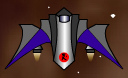 The second means of using the Guardian correctly elevates the latter part of the first tactic to an art form, but requires skill and dexterity in switching between multiple weapon types rapidly. Reverse Power Thrust can be used infinitely, as long as your power holds out, and provides more than sufficient thrust to avoid large fields of Gravity Mines. So let your enemies come to you. As they do, reverse away from them, trading Plasma Cannon shots with Reverse Power Thrust with the Mines of your choice. Gravity Mines will be effective in slowing their advance, particularly if they're alternated with Thunder Bolt Mines. If you want to use this strategy, trade in the HE Proximity Mines for XHE Time Mines instead. The Time Mines will detonate whether or not someone runs into them, doing splash damage in a fairly wide radius. Stealth Mines can also be dropped to further slow their advance and kill them with things they may not see in time. Still, despite these tactics, the Guardian is not a ship I can recommend. It makes perfect sense for both races to have a Mine-specialized craft, but it makes more sense as an AI opponent than a ship an actual Starfighter player should fly. Use some other ship instead. Ship Cost: 2250. Engine Costs: Enhanced Booster: 2250; Overclocked: 9000; Enhanced Propulsion: 10,125; Pulse Core: 20,250; Interstellar: 45,000; Enhanced Interstellar: 49,500. Best against: Tritons, Eoses, Minotaurs, Atlases.Weak against: Argonauts, Nymphs, Chariots, Centaurs, Warships, Hydras. Back to top Defender
Cons: Slow... incredibly slow, with limited mining capacity and virtually no long range capability. A suggested load-out: Weapons: Laser Beam, Xandalevium Blasters. Utilities: Engine Overdrive, Energy Cell, LASS Stealth System. Proximity Weapons: EMP Blast, Proximity Blaster. Engine: Defender Pulse Core Engine (1.6x top speed, 1.2x boost). How to use it: Get up close and personal! The Defender was built for knives-out, close in-fighting, and if you're not using the Defender this way, you're wasting its potential. The closer you get to your enemies, the more the advantage will swing to your favor and away from theirs. The Defender as extremely tough Shields (tougher than a Nymph!) and among the best manueverability in the game, so don't worry: she can take this kind of close combat. The suggested weapons load emphasizes these sorts of close attacks. First, attack the enemy at long range with your Xandelevium Blasters. One of these will kill a Drone, two to three will kill a Heavy Drone or Pegasus, and five will kill a Astro or Argonaut. Two or three should be fired at other opponents to soften them up. As you approach more closely, fire off the EMP Blast. This will leave them drifting and helpless. Further weaken or destroy the target with your space bar Laser Cannon or Laser Beam. Finish off stronger targets with your Proximity Blaster, or use that to single-shot kill enemy Drones, Heavy Drones, and Pegasi. Enemy EMP and Thunder Bolt Torpedoes will be your major weapon weaknesses. In particular, enemy Drones carrying EMP Torpedoes should be destroyed with your Xand Blasters at medium range (4000 distance or so) before they can get close enough to fire these torpedoes. Your major disadvantage in close combat will be your large size; the Defender is almost twice as large as a Nymph, and is an easy target to hit even with unguided Javelin Torpedoes. 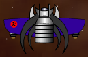 As you gain confidence in your dogfighting skills, trade the Laser Beam in for the Plasma Cannon. This weapon requires less energy than the Laser Beam and does more damage. As you gain piloting skill, you can trade the LASS Stealth System in for a Rapid Shield Recharger or a Field Hopper. The primary purpose of the LASS, initially, is to allow you to reach the battle without being destroyed at long range. The Defender's primary weakness is its speed; it is very slow! The Defender Pulse Core Engine will assist with this, but you're never going to be the first ship into the battle. Get used to this, and count on making some impressive kills when you do reach the battle. The ships you'll have the toughest time destroying are large ships such as the Atlas or Medusa. With a minimum of forward weapons, you will be left with few options but to pound these targets to dust with your space bar Laser Cannon. Ship Cost: 2500. Engine Costs: Enhanced Booster: 2500; Overclocked: 10,000; Enhanced Propulsion: 11,250; Pulse Core: 22,500; Interstellar: 50,000; Enhanced Interstellar: 55,000. Best against: Drones, Heavy Drones, Tritons, Eoses, Chariots, Centaurs, Minotaurs, Medusae.Weak against: Starfighters, Astros, Argonauts, Atlases, Hydras. Back to top Shredder
Cons: None, really. A well-balanced alien ship. A suggested load-out: Weapons: Type 4 Carnivore Torpedo, Laser Beam. Utility: Engine Overdrive, Holographic Disguise. Mine: XHE Time Mine. Proximity Weapons: Proximity Blaster. Engine: Enhanced Interstellar Shredder Engine (with Hyperspace Recharger). How to use it: Despite their completely different appearances, the Shredder and the Striker could be brothers. They have lots of similarities. In particular, their Shields, locking angle, acceleration, and maneuverability are all identical. In addition, their add-on slots are very closely aligned. The Striker gets four forward Weapons while the Shredder only gets two, but the Shredder gets a Mine slot and some extra speed, both of which are very useful to many Starfighter players. Their Utility slots and the single Proximity weapon per ship are the same. The strength of the Shredder is versatility: it is one of only four alien ships that has all four types of add-ons (the others are the Conqueror, Gatherer, and Enforcer). The weakness of the Shredder is tied up in its strength: while it has every type of add-on, it doesn't fulfill any combat role particularly well. It's a jack of all trades, but a master of none. The best way to use a Shredder is probably to concentrate on it as a mid-tier dogfighter, particularly using high-speed harrassment tactics. The recommended load-out emphasizes these merits. In particular, the Holographic Disguise will prevent guided weapon and Tractor Beam locks, and is not defeated by an EMP weapon the way other stealth systems are. When both this and Engine Overdrive are active, the Shredder can make several high-speed passes over foes, firing all of its weapons, the Type 4 Carnivores on far approach, the Laser Beam on close approach. It can then drop an XHE Time Mine or two (think of them as grenades; they explode after a couple of seconds regardless of contact, doing splash damage) as it passses over each opponent, then finish off weakened ones with the Proximity Blaster. This will create a symphony of chaos around the Shredder's targets and often allow it to escape the pass relatively unscathed, since most opponents will not be able to land very many solid blows on such a fast, aggressive target. However, particularly well-shielded targets and particularly fast targets like Argonauts and Chariots will probably shrug off such rush attacks unless the Shredder pilot is very skilled or very lucky. Unlike the human Hawk (the twin of this vessel), the Shredder has another advantage: it is extremely small, particularly for an alien ship. This will make it much harder to track and to target with unguided weapons and will give the alien player an unaccostomed advantage in this area. For this reason, the Shredder is a very popular ship with alien players as a pure dogfighter. In this capacity, equip the Shredder with a Plasma Cannon and Xandalevium Blasters instead of the recommended weapons, and an Energy Cell instead of the Holographic Disguise. This will shift the Shredder's strength over to close range battling, particularly against larger targets. The Xand Blasters are also quite useful in taking out human AI ambushes. 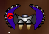 The downside to the Shredder in this role is lack of endurance. With only average maneuverability, and dropping weapon ammunition and energy as quickly as the Shredder is likely to be using these tactics, it will be unlikely that the pilot will pick up enough drops to remain in a given sector for very long. Still, this is a tremendously fun, engaging way to play Starfighter, and one that players in MP sectors in particular will have a hard time defeating. In Single Player sectors, however, the Shredder is hard to recommend since its lack of specialization and its limited endurance will make kill-farming much slower than it has to be.Ship Cost: 2750. Engine Costs: Enhanced Booster: 2750; Overclocked: 11,000; Enhanced Propulsion: 12,375; Pulse Core: 24,750; Interstellar: 55,000; Enhanced Interstellar: 60,500. Best against: Drones, Heavy Drones, Starfighters, Astros, Pegasi, Eoses, Irises.Weak against: Chariots, Centaurs, Warships, Medusae, Hydras. Back to top Raider
Cons: Extremely vulnerable up close, doesn't dare stop moving for any reason. A suggested load-out: Weapons: Xandalevium Blasters (x2), Type 4 Carnivore Torpedo, Thunder Bolt Torpedo. Utilities: Engine Overdrive. Mines: HE Proximity Mines. Engine: Enhanced Interstellar Raider Engine (with Hyperspace Recharger). How to use it: The Raider is a very popular ship for aliens, because it's the first ship available to newer players that really emphasizes the strength of the alien weapons. It shares the primary strength of the Sprinter: it is just as fast. To this, the Raider adds much superior Shields, two more primary Weapon slots (for a total of four), and a Mine slot. However, it sacrifices virtually all of its turning ability and acceleration for these boons; a Raider caught unmoving or moving slowly is an easily and quickly destroyed target, particularly since it is enormous for a fighter, more than twice the size of the typical human fighter. As a result, the Raider should always be on the move and should never be caught standing still. Always use your "X" key to get up to an attack speed quickly and once there, stick to medium and long range weapons such as the ones that I recommend. The best use of the Raider is in orbiting the edges of the battlefield, turning in to launch Xand Blasters (at targets between 3000 and 4500 distance away) and Type 4 Carnivores (at targets between 1000 and 2000 distance away). Anything that approaches within 1000 distance of the Raider should be met with the Thunder Bolt Torpedo. Your Mines should be infrequently used, and mostly if something decides to give you chase. In this circumstance, stick with Mines that are good against pursuers. HE Proximity Mines are a good choice against early AI opponents who will blindly fly into them. Later, the AIs seem to get smarter, so if you keep the Raider into the later game, switch to Heat Seeking or Gravity Mines. If you prefer fly-over attacks, then use Thunder Bolt Mines, but beware! If anything locks onto your Raider with a Tractor Beam, you're going to quickly find yourself in very serious trouble. The Engine Overdrive will be useful to escape should you find yourself getting over-run, or for high speed sniping tactics. Raiders are extremely vulnerable to swarms or enemy ships using EODs themselves. 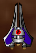 Because the Raider has four weapon slots (the first alien ship with this boon), a lot of players find it to be one of the best early ships in Starfighter for alien players. Alien weapons are undeniably superior to human ones, and a lot of alien players use this ship to experiment with some of these weapons. Most players that prefer long range sniping will stick with the Raider for a while, perhaps 100 to 201 kills, before switching to the undeniably superior Striker or Hunter for this purpose. Ship Cost: 4250. Engine Costs: Enhanced Booster: 4250; Overclocked: 17,000; Enhanced Propulsion: 19,125; Pulse Core: 38,250; Interstellar: 85,000; Enhanced Interstellar: 93,500. Best against: Tritons, Chariots, Centaurs, Minotaurs, Atlases, Medusae.Weak against: Astros, Argonauts, Nymphs, Hydras. Back to top Striker
Cons: A little slow, and not quite as maneuverable as it should be to compensate. A suggested load-out: Weapons: Xandalevium Blaster, Type 4 Carnivore Torpedo, Thunder Bolt Torpedo, Laser Beam. Utility: Engine Overdrive, Energy Cell. Proximity Weapons: Proximity Blaster. Mining Laser: Type 3 Mining Laser. Engine: Striker Pulse Core Engine (1.6x top speed, 1.2x boost). How to use it: The Striker is an excellent ship, a near-perfect upgrade for an Marauder pilot once you start to face Thunder Bolt weapons. In many ways, the Striker is a super-Marauder, with tougher Shields and a better (near-perfect) weapon load-out. Unfortunately, and unlike the human version, you do lose the Marauder's small size; the Striker is enormous. You also sacrifice some speed and some manueverability in the trade, plus Mine slots that you might have gotten used to using. That said, the Proximity Blaster is a much-superior trade for the Mine slots and offsets much of the Striker's dogfighting maneuverability and size problems. You'll find it's a very good trade, particularly since the Prox Blaster can one-shot-kill many of the ships that are an annoyance to slower ships, namely Drones, Heavy Drones, and Sprinters, and can seriously damage Starfighters and Astros. This will allow the Striker pilot to pick up frequent drops and keep both the Prox Blaster and his or her other weapons loaded. The Striker's larger size is actually an advantage here; she'll almost never miss a nearby drop. A Damage Bubble or Thunder Bolt proximity weapon will make the Striker vulnerable to swarms. The biggest strength of the Striker is its up-front weapons mix, with four forward weapon slots. I recommend a good mix of medium and short range weapons be loaded. As targets approach, they can be attacked with Xandalevium Blasters, then Type 4 Carnivore Torpedoes. The Type 4 Carnivore is also an excellent short-range weapon for targets that attempt to flee the Striker; I find it does its best damage to the rear of enemy targets whereas Xand Blasters seem to do the most damage when hitting targets head on. Tougher targets with better maneuverability than the Striker (Nymphs, Argonauts, and Hydras, primarily) can be met with a Thunder Bolt Torpedo, which will act as a force mutiplier for the ship's other weapons. A Laser Beam rounds out the recommended weapons mix; this can be traded for a Plasma Cannon as the Striker pilot gains confidence with his or her gunnery. The Striker is one of the ships that really needs the Pulse Core Engine upgrade rather than a Hyperspace Recharger. I realize the Hyperspace Recharger is popular, but the Striker truly needs the speed upgrade to be effective in combat. Strikers are also highly resistant to some weapons due (I believe) to her complex shape. Without any slab sides or points, many weapons seem to glance off the Striker's tough hide. 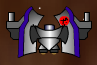 The Striker's low speed and only average fighter maneuverability are her key weaknesses; the ship should really have a maneuverability rating of 4, not 3, to balance its slow speed. Some ships with a lower maneuverability rating (such as the Protector) are given a wider weapon locking angle to compensate, but the Striker is not given this advantage. As a result, flying a Striker in close combat can sometimes be quite frustrating. It's particularly weak against highly maneuverable ships with tough Shields, such as the Argonaut and Nymph. Still, it's an excellent, well-balanced craft with a lot to recommend it. It's also one of the few ships that I actually recommend doing some serious mining in from time to time. The Striker's mining bay is relatively large and it's maneuverable enough to make such work worthwhile when you're not actively killing things. Ship Cost: 3000. Engine Costs: Enhanced Booster: 3000; Overclocked: 12,000; Enhanced Propulsion: 13,500; Pulse Core: 27,000; Interstellar: 60,000; Enhanced Interstellar: 66,000. Best against: Drones, Heavy Drones, Starfighters, Astros, Pegasi, Eoses, Satyrs.Weak against: Argonauts, Nymphs, Centaurs, Warships, Hydras. Back to top Hunter
Cons: Thin Shields and very poor maneuverability make it extremely vulnerable at close range. A suggested load-out: Xandalevium Blasters (x2), Type 4 Carnivores, EMP Torpedo, Thunder Bolt Torpedo (x2). Utility: LASS Stealth System. Mines: Thunder Bolt Mines. Engine: Enhanced Interstellar Hunter Engine (with Hyperspace Recharger). How to use it: The fact that the Hunter can move around at all is nearly irrelevant. The ship is essentially a mobile Defense Turret and is best used as such. Its single Utility slot and relatively thin Shields (150) make it an extremely poor choice for fly-by or fly-over attacks. In fact, like the somewhat similar Oppressor, the Hunter should never get any closer than 1500 distance from its enemies, and any enemy that penetrates to within that distance should be met with one or both of the Hunter's Thunder Bolt Torpedoes. Anything that comes closer still should have the ship's two Thunder Bolt Mines dropped on it while the Hunter moves away on boosters. If the target isn't destroyed, the Hunter pilot has only one good choice: escaping into hyperspace. As a result, I have not recommended any close range weapons for the Hunter, nor any unguided weapons. Both would be actively counter-productive for this ship class. A Hunter that enters a dogfight has lost before the fight has begun; the ship is in no way capable of such fighting. It is too large, too slow, its Shields are too thin, and its turn rate is too poor. Instead, its alien-best six weapon slots for a fighter should all be devoted to medium and long range weapons, and the Hunter should stay at the periphery of the battlefield. As threats approach the ship, they should be attacked by the ship's Xandalevium Blasters and Type 4 Carnivore Torpedoes, in roughly that order. Xand Blasters do terrific damage to targets as they close with the Hunter, especially fast targets, such as those approaching on Engine Overdrive. I recommend an EMP Torpedo, and this torpedo should be launched at particularly tough, maneuverable targets (such as Hydras and Nymphs) just before one or both Thunder Bolt Torpedoes are launched at them; this will limit the damage the Hunter takes while the Thunder Bolts do their work. I also recommend a LASS as the Hunter's single Utility for this reason. It will allow the Hunter to launch all of its ordnance before it is forced to flee the sector. Anything with greater Shields than the Hunter and a similar weapon load (Warships, in particular) will be the bane of this ship class. In addition, if the Hunter gets swarmed, she's done; she's incredibly vulnerable to small fast dogfighters. The Hunter can dish it out, but she can't take it. 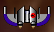 As a result, while this strategy will work for limited durations, the Hunter has abysmally poor endurance. Once its Thunder Bolt Torpedoes are expended or once it starts taking weapon damage at all, the smart Hunter pilot will leave the sector and start over in a new one. The good news is that if this strategy is employed, the Hunter will rack up a lot of kills, particularly against ambushes, against which it shines. The bad news is that flying a Hunter correctly is rather dull. It would have been a great ship to unlock at 26 kills. By the time aliens earn this ship, though, they should have sufficient piloting and gunnery skill not to need it. Ship Cost: 4250. Engine Costs: Enhanced Booster: 4250; Overclocked: 17,000; Enhanced Propulsion: 19,125; Pulse Core: 38,250; Interstellar: 85,000; Enhanced Interstellar: 93,500. Best against: Tritons, Chariots, Hawks, Minotaurs, Atlases, Medusae.Weak against: Argonauts, Nymphs, Hawks, Warships, Hydras. Back to top Gatherer
Cons: Near-useless as a fighting vessel, can only defend itself from single attackers. A suggested load-out: Weapons: Laser Beam, Xandalevium Blaster. Utilities: Engine Overdrive, Energy Cell, LASS Stealth System, Field Hopper. Mines: Thunderbolt Mines. Proximity Weapons: Thunderbolt Proximity. Mining Laser: Type LR 3 Mining Laser. Engine: Standard Gatherer Engine. How to use it: The Gatherer is the most specialized ship in the game in terms of its use in Starfighter. As a matter of fact, there's only two good places to buy one and only one good reason to buy one. If you need a lot of money quickly, the Gatherer is the way to go. Travel to Sector S-9-15. This is where you're going to buy your Gatherer. Equip it as I have suggested, leave the Substation, and travel by Engine Overdrive to S-8-15. This is a mining sector, a sector with many asteroids, and these asteroids are very rich in ore. It is possible to fill even the Gatherer's 5000 capacity mining bay in under two minutes, then use Engine Overdrive to return to S-9-15 for delivery. (The second possible location to purchase a Gatherer is S-9-17, using S-9-18 as your mining sector, but this is slightly more dangerous due to the slightly increased Threat level of these sectors.) If you grind mining in this manner, you can make at least 250,000 money per hour with a good computer.
Beyond this, there isn't much to say. Honestly, there really isn't much use to the Gatherer; by the time you need the very large sums of money that the Gatherer will afford you by mining, you should be able to make near-equivalent money through Bounties and Clearance missions. Ship Cost: 11,250. Engine Costs: Enhanced Booster: 11,250; Overclocked: 45,000; Enhanced Propulsion: 50,625; Pulse Core: 101,250; Interstellar: 225,000; Enhanced Interstellar: 247,500. Best against: Can defend itself against most single opponents, other than Warships and larger.Weak against: Large groups, particularly ambushes. Back to top Destroyer
Cons: Limited maneuverability makes it vulnerable to multiple small attackers up close. A suggested load-out: Weapons: Laser Beam, Xandalevium Blaster, Type 4 Carnivores, Disruptor, Thunder Bolt Torpedo. Utilities: Engine Overdrive, Energy Cell. Proximity Weapons: Proximity Blaster. Large Weapon: Player's Choice. Engine: Enhanced Interstellar Destroyer Engine (with Hyperspace Recharger). How to use it: The Destroyer is a bit of a specialized vessel and it's actually only really good at one thing: destroying Defense Turrets and other ships as big as it is. The suggested load-out is built toward that end. The Xandalevium Blasters will destroy long range threats to the ship. As enemies come closer, the Destroyer Captain can switch to Type 4 Carnivores, then the Laser Beam and Proximity Blaster for close-range personal defense. The Disruptor is an excellent weapon for pushing your opponents away and letting the Destroyer wield its long range weapons on them. Once your enemies are close, the Energy Cell I recommend will keep the Energy-hungry Laser Beam fueled. The Destroyer has extremely tough Shields (350), so rewards a patient style. Large targets such as Atlases and Defense Turrets should be destroyed using the space bar Laser Cannon, after softening them up with the Thunder Bolt Torpedo. This weapon can also be used to weaken up tough, fast targets such as Hawks and Centaurs. I personally like to orbit Defense Turrets at high speed using Engine Overdrive until they run out of missiles; other players prefer using the LASS or Holographic Disguise to defeat missile locks entirely. The Destroyer is best used in hit-and-fade attacks, since it will be fairly rare that you pick up bonuses with this ship. The ship's turn rate is too slow to really take advantage of bonuses unless they fall right in front of you or right behind you. As a result, if you take the Destroyer on hunting expeditions, you'll mostly be destroying your limit of targets until you run out of some key ammunition or energy, then retreating from the sector to reload. 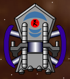 The Destroyer is the first ship aliens have access to that includes a Large Weapon. In Multiplayer sectors, the Plasma Relay is popular; it does about 225 points of damage in cylindrical cone in front of the ship, which is often enough to kill most ships, particularly if they've already been weakened. In Single Player sectors, the Vortex Bomb is often a better choice. Destroyers deal with ambushes by herding everything in the sector to a central point (often using Engine Overdrive or boosters). Simply orbit AI ships for a while; they'll eventually cluster in the center of your orbit as they try to catch you. Once they're nicely clustered, fly into the cluster and drop your Vortex Bomb... and you'll likely kill every hostile in the herd. Ultra Vortex Bombs can also be used, but are incredibly costly and generally not worth the expense except in specialized situations. The Destroyer (and the Oppressor which is based on it) are the most "love it or hate it" ships in the game. Either you will "get" this ship or you won't. I feel it is the best ship for alien players in the game (at least until an Elite enters your life); it really emphasizes the strengths of the alien long range weapon suite. Ship Cost: 15,750. Engine Costs: Enhanced Booster: 15,750; Overclocked: 63,000; Enhanced Propulsion: 70,875; Pulse Core: 141,750; Interstellar: 315,000; Enhanced Interstellar: 346,500. Best against: Defense Turrets, Tritons, Centaurs, Eoses, Atlases, Warships, Medusae.Weak against: Argonauts, Nymphs, Hydras. Back to top Oppressor
Cons: Anything closer than 1000 distance is an immediate and mortal threat unless the Oppressor flees. A suggested load-out: Weapons: Xandalevium Blasters (x2), Type 4 Carnivores (x2), Thunder Bolt Torpedo, Disruptor. Mines: Thunder Bolt Mines (x2). Large Weapon: Large EMP Bomb. Engine: Enhanced Interstellar Oppressor Engine (with Hyperspace Recharger). How to use it: Much of the text associated with the very similar Destroyer applies to the Oppressor as well. If anything, the Oppressor is even more specialized than its smaller cousin. Its lack of Utility slots is an enormous weakness to this class; it reduces the versatility and survivability of this ship tremendously. Without Utilities such as a stealth system, Engine Overdrive, Field Hopper, or a Tractor Beam, virtually all of the traditional means of escape from being outnumbered are not available to the Oppressor Captain. As a matter of fact, anything that gets within 1500 of the Oppressor should be greeted with both the Oppressor's Thunder Bolt Torpedo and Disruptor. The Disruptor is a particularly good alien Weapon that will push anything that approaches the Oppressor away, while doing decent damage at the same time. The Hornet Torpedo can also be used for this purpose, particularly in Multiplayer sectors. Anything that persists should have the Thunder Bolt Mines dropped on it. The Oppressor should then activate boosters to escape the damage from the mines, then flee into hyperspace if the enemy isn't destroyed. For this reason, I'm not recommending any close range weaponry for the Oppressor; such weaponry would be not only beside the point, but actively counter-productive. Instead, long range weapons should be and are the Oppressor's forte. In point of fact, Oppressors should do all their fighting at about 4000 distance. In particular, Xand Blasters should be targeted on anything approaching the Oppressor, but more than 2000 distance away. The Type 4 Carnivores should be used against anything not directly approaching the Oppressor, or anything approaching the Oppressor that gets closer. If anything comes closer still... Thunder Bolt and Disruptors. 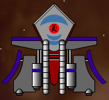 Some Oppressor Captains prefer hit-and-run fly-over attacks; I consider these to be massively risky for the Oppressor. All it takes is a single ship being flown over to have a Tractor Beam, and the Oppressor's tactical options are gone; it will be quickly surrounded, overwhelmed, and destroyed. Long range sniping really is the only way to go with this ship. For this reason, Large Weapons are not as much use to the Oppressor as for other large warships; in fact, there's only one good choice, the Large EMP Bomb. This weapon will disable any allied ships that exist in the area, but since it will disable enemy ships too, this will give the Oppressor a free hand to destroy targets near and far with its weapons while the EMP is having its effect. Ship Cost: 15,750. Engine Costs: Enhanced Booster: 15,750; Overclocked: 63,000; Enhanced Propulsion: 70,875; Pulse Core: 141,750; Interstellar: 315,000; Enhanced Interstellar: 346,500. Best against: Defense Turrets, Tritons, Hawks, Centaurs, Eoses, Atlases, Warships, Medusae.Weak against: Starfighters, Pegasi, Astros, Argonauts, Nymphs, Hydras. Back to top Enforcer
Cons: Is only really useful up close, has very limited long range striking options; thinner Shields than most ships its size. A suggested load-out: Weapons: Xandalevium Blaster, Plasma Cannon. Utilities: Engine Overdrive, Energy Cell (x2), Rapid Shield Recharger. Mines: Thunder Bolt Mines. Proximity Weapon: EMP Blast. Large Weapon: Player's Choice. Engine: Pulse Core Enforcer Engine (1.6x top speed, 1.2x speed booster). Update for Starfighter version 1.3: As of Starfighter: Disputed Galaxy version 1.3, the Enforcer's speed has been reduced from 12 to 9, and its price has been reduced from 6750 to 5750. This reduces the Enforcer's rank as a Utility craft from an A to a B, as it will take much longer to perform utility missions such as mining. All references to the Enforcer being "fast" have likewise been removed; for this reason, its rank as a dogfighter has been reduced from B+ to B, as it is tougher to dodge weapons at the lower speed, making the Enforcer less survivable. How to use it: The Enforcer is not quite the unstoppable killing machine the very similar human Hydra is, but it's still a very capable ship. I personally use this ship quite often, I have a very high kill to death ratio with it. The Enforcer is very tough to kill. The Enforcer is maneuverable and has excellent Shields; while not as good as other warships, the Enforcer compensates by being very small for an alien ship (size factor 12, smaller than many fighters!). Unfortunately, its large slab sides and flat surfaces make it somewhat vunlerable; it doesn't resist weapons fire as well as other shapes would. As a result, it has a lower Dogfighter rating than the similar Hydra. In my view, the Enforcer should be granted 325 rating Shields, similar to the shield difference between the Defender, which has 230 Shields to the Nymph's 200. That said, in many ways, the Enforcer is a bit of a super-Defender. It has many of the same strengths and weaknesses. The weaknesses are its speed, which is below average, and it carries only two primary weapons. You're going to need to pick up a lot of bonuses to stay in a battle. This will reward a dogfighting style. However, the Enforcer's maneuverability will make this very easy. By this point in the game, you should be completely proficient with Plasma Cannons, and you'll find these weapons a perfect fit for your new Enforcer. Longer-range targets can be destroyed with the Xandalevium Blasters, mostly Drones and Heavy Drones fitted with EMP and Thunder Bolt Torpedoes, both of which are the bane of this ship class. Any Proximity weapon is a good choice. I personally prefer the EMP Blast, as it defeats the third bane of this class: Tractor Beams. However, virtually any of the Proximity weapons will be of value to the Enforcer Captain. The true strength of this class is the alien-best four Utility slots. This makes the Enforcer the aliens's most versatile ship, and again, there are as many Utility load-outs as there are Enforcer Captains. The load-out that I've recommended is the one I use myself, and is a very aggressive load intended to keep the Enforcer in nearly continuous combat. You'll find it a very useful load for visiting (and living in) Threat 1 sectors. The correctly piloted Enforcer should only rarely require its mines; it's fairly rare that the Enforcer will need to flee from a battle. As a result, Thunder Bolt Mines are your best choice, and the best place to use them is against large targets such as Atlases, which Enforcers will have a problem with due to the energy requirements of pounding them to dust with Plasma Cannon. Instead, do a fly-by, dropping the mines as you pass. Stay out of the area for 15 to 20 seconds, then return and you should find a much-weakened Atlas. 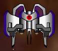 Finally, the Large Weapon slot is left to the whim of the player. In MP sectors, the Plasma Relay will often be your best choice. It does about 225 points of damage in cylindrical cone in front of the ship, which is often enough to kill most ships, particularly if they've already been weakened. In Single Player sectors, the Vortex Bomb is often a better choice. Enforcers can deal with ambushes by herding everything in the sector to a central point (often using Engine Overdrive or boosters). Simply orbit AI ships for a while; they'll eventually cluster in the center of your orbit as they try to catch you. Once they're nicely clustered, fly into the cluster and drop your Vortex Bomb... and you'll likely kill every hostile in the herd. The Enforcer is a tricky ship to judge. The Hydra is clearly the humans's best ship, but given the strength of alien long range weapons, a better choice for alien players is probably the Destroyer or Elite Destroyer. Ship Cost: 5750. Engine Costs: Enhanced Booster: 5750; Overclocked: 23,000; Enhanced Propulsion: 25,875; Pulse Core: 51,750; Interstellar: 115,000; Enhanced Interstellar: 126,500. Best against: Almost everything.Weak against: Nymphs, Atlases, Warships, Medusae. Back to top Elite Destroyer
Cons: Two Large Weapons is a bit of a curse if you like to do any kill-farming. A suggested load-out: Weapons: Xandalevium Blaster, Type 4 Carnivores, Thunder Bolt Torpedo, Plasma Cannon. Utilities: Energy Cell, Teleport Discs. Proximity Weapons: Proximity Blaster. Large Weapons: Ultra Vortex Bomb, Plasma Relay. Engine: Enhanced Interstellar Elite Destroyer Engine (with Hyperspace Recharger). How to use it: The Elite is obviously an improvement on the alien Destroyer, but it's also interesting how many similarties this ship has to the Striker, as well. When compared to the Destroyer, the Elite receives a +1 bonus to its maneuverability (to a 2 Rating) and a +1000 bonus to its Mining capacity (to 3000). It also trades in one standard Weapon for a Large Weapon. When compared to the Striker, though, the weapon load out is the same, save for the two Large Weapons the Elite receives. It is also faster than the Striker and has much superior Shields and locking angle. The Striker has much superior acceleration of course, but with the "X" key, the Elite can get up to combat speed quickly. As a result, it is interesting to fight in the Elite as if one is fighting in a sort of super-Striker. The same sort of tactics work well in the Elite, and makes the ship rather terrifying for your enemies to deal with. Open with your Xandelevium Blasters and your Type 4 Carnivore Torpedoes! Here, the superiority of alien weapons will serve you very well. Both of these weapons are very tough for approaching opponents to dodge, and both do very good damage, particularly the Xand Blasters, which seem to do their best damage when your enemies are charging toward you. Meet particularly tough targets as they approach with the Thunder Bolt Torpedo, then, as they close to extremely close ranges, the Plasma Relay. This weapon does 225 Shield damage to a single target, or a larger number of targets in a bunched group in front of your vessel. The Elite's excellent (for a capital-class ship) maneuverability will serve you well here, and let you rapidly line up the Plasma Relay. Your Proximity Blaster is an excellent finisher, doing 60 points of Shield damage per blast... and you get three of them! This makes trying to swarm an Elite with small craft a deadly experience, just like the very similar Striker. Tougher targets (and those using stealth) can be met with your Plasma Cannon, plus an Energy Cell to keep it charged up. Normally, humans have the advantage in close combat, but the Elite is an exception. Use its manueverability and very tough shields to your advantage! Your enemies should already be softened up by your many long range weapons. A good trick to remember is that an Energy Cell actually delivers 125-130% Energy, so if you're firing Plasma Cannon blasts, you can get an extra blast per Energy Cell if you keep this tactic in mind. Activate the Energy Cell with between 10% and 50% Energy remaining, then immediately trigger a Plasma Cannon blast or two to take advantage of this. These tactics will allow you to deliver more than 1000 Shield damage to your nearby opponents... and you haven't even used your Ultra Vortex Bomb yet! The Ultra Vortex Bomb is best used against swarms and ambushes. This is a tremendously expensive weapon, and does just as much damage to friends as it does enemies, so deploy it carefully! The biggest advantage to the UVB, ironically, is that it doubles as an EMP weapon, which makes it particularly difficult for your enemies to avoid. But your friends probably won't be able to avoid it either, unless you either coordinate its deployment as part of an overall gang strategy, or you inform your allies to evacuate the sector in advance. I've heard stories of cooperative gangs using multiple UVBs at once, with each member of the gang in one corner, dominating about 25% of the sector, and deploying their UVB in their particular "zone." These tactics would be incredibly tough to beat... 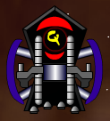 You will mostly be using the Elite to take on enemies in like ships such as the human Admiral Class Warship, and as a result, I recommend carrying a Teleport Disc as your second utility. You will more than likely be facing EMP weapons and the Plasma Relay, and the Teleport Disc is probably your best defense against these tactics. If you see yourself drifting or moving into the forward arc of an Admiral, activate the Teleport Disc right away! Do the same if you are affected by an EMP. You get a single action after you're affected by an EMP, and a Teleport Disc should be that action! This will rapidly get you out of harm's way and force the Admiral to line his shot back up. Hopefully, you will be out of the EMP effect by then and can take aggressive action yourself. I prefer the Teleport Disc to (say) the Field Hopper for this use because the Teleport Disc is both predictable and can be used aggressively, to jump into the midst of your opponents before deploying the Ultra Vortex Bomb or other close-range weapons. Oh, and don't forget about mining! The Elite has an enormous mining bay and keeping it full will go a long way toward paying for those expensive Large Weapons... Because of the superiority of alien long-range weapons, I feel the Elite is clearly superior to the human Admiral, and I recommend different tactics for the Elite than I do for the Admiral. Alien long-range weapons are very tough to beat, and should be used! However, the one problem that you're going to have is endurance. The fact that you have to trade one standard Weapon for a Large Weapon is a blessing... but it's also a curse since Large Weapons don't reload when you enter a new sector. The Elite is a horrifying sight to behold... for the two or three minutes that her weapons hold out. During this period, you'll be an unstoppable killing machine. Once this period is over, though, it's time to jump out of the sector to restock. Ship Cost: 9500. Engine Costs: Enhanced Booster: 9500; Overclocked: 38,000; Enhanced Propulsion: 42,750; Pulse Core: 85,500; Interstellar: 190,000; Enhanced Interstellar: 209,000. Best against: Defense Turrets, Tritons, Centaurs, Eoses, Atlases, Warships, Medusae.Weak against: Nothing, as long as its ammunition holds out.
| ||||||||||||||||||||||||||||||||||||||||||||||||||||||||||||||||||||||||||||||||||||||||||||||||||||||||||||||||||||||||||||||||||||||||||||||||||||||||||||||||||||||||||||||||||||||||||||||||||||||||||||||||||||||||||||||||||||||||||||||||||||||||||||||||||||||||||||||||||||||||||||||||


{kind=link}
{kind=link}
{kind=link}
{kind=link}
{kind=link}
{kind=link}
{kind=link}
{kind=link}
{kind=link}
{kind=link}
{kind=link}
{kind=link}
{kind=link}
{kind=link}
{kind=link}
{kind=link}
{kind=link}